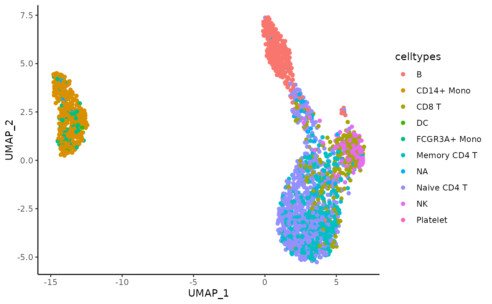

vignettes/stability-dim-reduction-flexibility.Rmd
stability-dim-reduction-flexibility.Rmd
is_seuratdata <- require("SeuratData", quietly = TRUE)## ── Installed datasets ──────────────────────────────── SeuratData v0.2.2.9001 ──## ✔ pbmc3k 3.1.4## ────────────────────────────────────── Key ─────────────────────────────────────## ✔ Dataset loaded successfully
## ❯ Dataset built with a newer version of Seurat than installed
## ❓ Unknown version of Seurat installed
if (!is_seuratdata) {
devtools::install_github('satijalab/seurat-data', upgrade = "never")
}
is_harmony <- require("harmony", quietly = TRUE)
if (!is_harmony) {
install.packages("harmony")
}
is_rsamtool <- require("Rsamtools", quietly = TRUE)##
## Attaching package: 'BiocGenerics'## The following objects are masked from 'package:stats':
##
## IQR, mad, sd, var, xtabs## The following objects are masked from 'package:base':
##
## anyDuplicated, aperm, append, as.data.frame, basename, cbind,
## colnames, dirname, do.call, duplicated, eval, evalq, Filter, Find,
## get, grep, grepl, intersect, is.unsorted, lapply, Map, mapply,
## match, mget, order, paste, pmax, pmax.int, pmin, pmin.int,
## Position, rank, rbind, Reduce, rownames, sapply, setdiff, table,
## tapply, union, unique, unsplit, which.max, which.min##
## Attaching package: 'S4Vectors'## The following object is masked from 'package:utils':
##
## findMatches## The following objects are masked from 'package:base':
##
## expand.grid, I, unname##
## Attaching package: 'Biostrings'## The following object is masked from 'package:base':
##
## strsplit
if (!is_rsamtool) {
BiocManager::install("Rsamtools")
}## Loading required package: SeuratObject## Loading required package: sp##
## Attaching package: 'sp'## The following object is masked from 'package:IRanges':
##
## %over%##
## Attaching package: 'SeuratObject'## The following object is masked from 'package:Biostrings':
##
## intersect## The following object is masked from 'package:GenomicRanges':
##
## intersect## The following object is masked from 'package:GenomeInfoDb':
##
## intersect## The following object is masked from 'package:IRanges':
##
## intersect## The following object is masked from 'package:S4Vectors':
##
## intersect## The following object is masked from 'package:BiocGenerics':
##
## intersect## The following objects are masked from 'package:base':
##
## intersect, t##
## Attaching package: 'data.table'## The following object is masked from 'package:GenomicRanges':
##
## shift## The following object is masked from 'package:IRanges':
##
## shift## The following objects are masked from 'package:S4Vectors':
##
## first, second
n_repetitions <- 30The matrix processing parameter of the assess_feature_stability function is a function that enables the user to specify any method to perform the dimensionality reduction prior to applying the UMAP algorithm and the clustering pipeline. By default, the dimensionality reduction used in ClustAssess is a precise PCA using the prcomp package. However, this function can be easily changed, as it will be shown in the following examples.
For the PCA example, we will use the PBMC 3k dataset from the SeuratData package. The preprocessing of the dataset is identical with the one performed in the stability pipeline vignette.
InstallData("pbmc3k")## Warning: The following packages are already installed and will not be
## reinstalled: pbmc3k
data("pbmc3k")
pbmc3k <- UpdateSeuratObject(pbmc3k)## Validating object structure## Updating object slots## Ensuring keys are in the proper structure## Warning: Assay RNA changing from Assay to Assay## Ensuring keys are in the proper structure## Ensuring feature names don't have underscores or pipes## Updating slots in RNA## Validating object structure for Assay 'RNA'## Object representation is consistent with the most current Seurat version
pbmc3k <- PercentageFeatureSet(pbmc3k, pattern = "^MT-", col.name = "percent.mito")
pbmc3k <- PercentageFeatureSet(pbmc3k, pattern = "^RP[SL][[:digit:]]", col.name = "percent.rp")
# remove MT and RP genes
all.index <- seq_len(nrow(pbmc3k))
MT.index <- grep(pattern = "^MT-", x = rownames(pbmc3k), value = FALSE)
RP.index <- grep(pattern = "^RP[SL][[:digit:]]", x = rownames(pbmc3k), value = FALSE)
pbmc3k <- pbmc3k[!((all.index %in% MT.index) | (all.index %in% RP.index)), ]
pbmc3k <- subset(pbmc3k, nFeature_RNA < 2000 & nCount_RNA < 2500 & percent.mito < 7 & percent.rp > 7)
pbmc3k <- NormalizeData(pbmc3k, verbose = FALSE)
pbmc3k <- FindVariableFeatures(pbmc3k, selection.method = "vst", nfeatures = 3000, verbose = FALSE)
features <- dimnames(pbmc3k@assays$RNA)[[1]]
var_features <- pbmc3k@assays[["RNA"]]@var.features
n_abundant <- 3000
most_abundant_genes <- rownames(pbmc3k@assays$RNA)[order(Matrix::rowSums(pbmc3k@assays$RNA),
decreasing = TRUE
)]
pbmc3k <- ScaleData(pbmc3k, features = features, verbose = FALSE)We notice that the seurat_annotations column has some missing values. For simplicity, we will replace them with “NA”.
mask <- is.na(pbmc3k$seurat_annotations)
pbmc3k$seurat_annotations <- as.character(pbmc3k$seurat_annotations)
pbmc3k$seurat_annotations[mask] <- "NA"Select the features used for the stability assessment.
features <- dimnames(pbmc3k@assays$RNA)[[1]]
var_features <- pbmc3k@assays[["RNA"]]@var.features
n_abundant <- 3000
most_abundant_genes <- rownames(pbmc3k@assays$RNA)[order(Matrix::rowSums(pbmc3k@assays$RNA),
decreasing = TRUE
)]
steps <- seq(from = 500, to = 3000, by = 500)
ma_hv_genes_intersection_sets <- sapply(steps, function(x) intersect(most_abundant_genes[1:x], var_features[1:x]))
ma_hv_genes_intersection <- Reduce(union, ma_hv_genes_intersection_sets)
ma_hv_steps <- sapply(ma_hv_genes_intersection_sets, length)Assess the stability of the dimensionality reduction when PCA is used as dimensionality reduction.
matrix_processing_function <- function(dt_mtx, actual_npcs = 30) {
actual_npcs <- min(actual_npcs, ncol(dt_mtx) %/% 2)
RhpcBLASctl::blas_set_num_threads(foreach::getDoParWorkers())
embedding <- stats::prcomp(x = dt_mtx, rank. = actual_npcs)$x
RhpcBLASctl::blas_set_num_threads(1)
rownames(embedding) <- rownames(dt_mtx)
colnames(embedding) <- paste0("PC_", seq_len(actual_npcs))
return(embedding)
}
pca_feature_stability <- assess_feature_stability(
data_matrix = pbmc3k@assays[["RNA"]]@scale.data,
feature_set = most_abundant_genes,
resolution = seq(from = 0.1, to = 1, by = 0.1),
steps = steps,
n_repetitions = n_repetitions,
feature_type = "MA",
graph_reduction_type = "PCA",
matrix_processing = matrix_processing_function,
umap_arguments = list(
min_dist = 0.3,
n_neighbors = 30,
metric = "cosine"
),
ecs_thresh = 1,
clustering_algorithm = 1
)## Warning: executing %dopar% sequentially: no parallel backend registeredPlot the distribution of the celltypes on the UMAP embedding obtained on the top 1000 Most Abundant genes.
umap_df <- data.frame(pca_feature_stability$embedding_list$MA$"1000")
umap_df$celltypes <- pbmc3k$seurat_annotations
ggplot(umap_df, aes(x = UMAP_1, y = UMAP_2, color = celltypes)) +
geom_point() +
theme_classic()We can also modify the function by adding an addition post-processing step to the PCA. In this example, we will use the Harmony correction to remove the “batch effect” created by the celltypes. Note: This example is meant to exemplify how to use the Harmony correction in the ClusAssess pipeline. The batch correction is actually not needed in the PBMC 3k dataset.
matrix_processing_function <- function(dt_mtx, actual_npcs = 30) {
actual_npcs <- min(actual_npcs, ncol(dt_mtx) %/% 2)
RhpcBLASctl::blas_set_num_threads(foreach::getDoParWorkers())
embedding <- stats::prcomp(x = dt_mtx, rank. = actual_npcs)$x
RhpcBLASctl::blas_set_num_threads(1)
rownames(embedding) <- rownames(dt_mtx)
colnames(embedding) <- paste0("PC_", seq_len(actual_npcs))
embedding <- RunHarmony(embedding, pbmc3k$seurat_annotations, verbose = FALSE)
return(embedding)
}
pca_harmony_feature_stability <- assess_feature_stability(
data_matrix = pbmc3k@assays[["RNA"]]@scale.data,
feature_set = most_abundant_genes,
resolution = seq(from = 0.1, to = 1, by = 0.1),
steps = steps,
n_repetitions = n_repetitions,
feature_type = "MA",
graph_reduction_type = "PCA",
matrix_processing = matrix_processing_function,
umap_arguments = list(
min_dist = 0.3,
n_neighbors = 30,
metric = "cosine"
),
ecs_thresh = 1,
clustering_algorithm = 1,
verbose = TRUE
)Plot the distribution of the celltypes on the UMAP embedding obtained on the top 1000 Most Abundant genes.
umap_df <- data.frame(pca_harmony_feature_stability$embedding_list$MA$"1000")
umap_df$celltypes <- pbmc3k$seurat_annotations
ggplot(umap_df, aes(x = UMAP_1, y = UMAP_2, color = celltypes)) +
geom_point() +
theme_classic()
In this example we will showcase the flexibility of the assess_feature_stability function by using the ATAC-seq data. For this example, we will use the multiome PBMC dataset from the SeuratData package.
library(Signac)
InstallData("pbmcMultiome")## Installing package into '/tmp/RtmpHLlwfi/temp_libpath7b4c499b60ac'
## (as 'lib' is unspecified)
data("pbmc.atac")As presented in the (Signac)(https://stuartlab.org/signac/articles/pbmc_vignette) package, the ATAC-seq data is usually processed using the TF-IDF normalization followed by the the calculation of the singular values. These two steps are also known as LSI (Latent Semantic Indexing).
pbmc.atac <- RunTFIDF(pbmc.atac)## Performing TF-IDF normalization## Warning in RunTFIDF.default(object = GetAssayData(object = object, slot =
## "counts"), : Some features contain 0 total countsIdentify the highly variable peaks.
pbmc.atac <- FindTopFeatures(pbmc.atac, min.cutoff = "q5")
var_peaks <- pbmc.atac@assays$ATAC@var.features[seq_len(3000)]To speedup the assessment, set a parallel backend with 6 cores.
RhpcBLASctl::blas_set_num_threads(1)
ncores <- 6
if (ncores > 1) {
my_cluster <- parallel::makeCluster(
ncores,
type = "PSOCK"
)
doParallel::registerDoParallel(cl = my_cluster)
}Assess the stability of the dimensionality reduction by varying the number of highly variable peaks.
matrix_processing_function <- function(dt_mtx, actual_n_singular_values = 50) {
actual_n_singular_values <- min(actual_n_singular_values, ncol(dt_mtx) %/% 2)
RhpcBLASctl::blas_set_num_threads(foreach::getDoParWorkers())
embedding <- RunSVD(Matrix::t(dt_mtx), n = actual_n_singular_values, verbose = FALSE)@cell.embeddings
# remove the first component, as it does contain noise - see the Signac vignette
embedding <- embedding[, 2:actual_n_singular_values]
RhpcBLASctl::blas_set_num_threads(1)
rownames(embedding) <- rownames(dt_mtx)
colnames(embedding) <- paste0("LSI_", seq_len(actual_n_singular_values - 1))
return(embedding)
}
lsi_atac_feature_stability <- assess_feature_stability(
data_matrix = pbmc.atac@assays[["ATAC"]]@data,
feature_set = var_peaks,
resolution = seq(from = 0.1, to = 1, by = 0.1),
steps = steps,
n_repetitions = n_repetitions,
feature_type = "HV_peaks",
graph_reduction_type = "PCA",
matrix_processing = matrix_processing_function,
umap_arguments = list(
min_dist = 0.3,
n_neighbors = 30,
metric = "cosine"
),
ecs_thresh = 1,
clustering_algorithm = 1,
verbose = TRUE
)## Warning: No assay specified, setting assay as RNA by default.
## No assay specified, setting assay as RNA by default.
## No assay specified, setting assay as RNA by default.
## No assay specified, setting assay as RNA by default.
## No assay specified, setting assay as RNA by default.
## No assay specified, setting assay as RNA by default.
foreach::registerDoSEQ()Plot the distribution of the celltypes on the UMAP embedding obtained on the top 1000 Highly Variable peaks.
umap_df <- data.frame(lsi_atac_feature_stability$embedding_list$HV_peaks$"1000")
umap_df$celltypes <- pbmc.atac$seurat_annotations
ggplot(umap_df, aes(x = UMAP_1, y = UMAP_2, color = celltypes)) +
geom_point() +
theme_classic()## R version 4.4.0 (2024-04-24)
## Platform: x86_64-pc-linux-gnu
## Running under: Ubuntu 22.04.4 LTS
##
## Matrix products: default
## BLAS: /usr/lib/x86_64-linux-gnu/openblas-pthread/libblas.so.3
## LAPACK: /usr/lib/x86_64-linux-gnu/openblas-pthread/libopenblasp-r0.3.20.so; LAPACK version 3.10.0
##
## locale:
## [1] LC_CTYPE=C.UTF-8 LC_NUMERIC=C LC_TIME=C.UTF-8
## [4] LC_COLLATE=C.UTF-8 LC_MONETARY=C.UTF-8 LC_MESSAGES=C.UTF-8
## [7] LC_PAPER=C.UTF-8 LC_NAME=C LC_ADDRESS=C
## [10] LC_TELEPHONE=C LC_MEASUREMENT=C.UTF-8 LC_IDENTIFICATION=C
##
## time zone: Europe/Bucharest
## tzcode source: system (glibc)
##
## attached base packages:
## [1] stats4 stats graphics grDevices utils datasets methods
## [8] base
##
## other attached packages:
## [1] pbmcMultiome.SeuratData_0.1.4 Signac_1.13.0
## [3] data.table_1.15.4 ggplot2_3.5.1
## [5] ClustAssess_1.0.0 Seurat_5.1.0
## [7] SeuratObject_5.0.2 sp_2.1-4
## [9] Rsamtools_2.20.0 Biostrings_2.72.1
## [11] XVector_0.44.0 GenomicRanges_1.56.0
## [13] GenomeInfoDb_1.40.1 IRanges_2.38.0
## [15] S4Vectors_0.42.0 BiocGenerics_0.50.0
## [17] harmony_1.2.1 Rcpp_1.0.13
## [19] pbmc3k.SeuratData_3.1.4 SeuratData_0.2.2.9001
##
## loaded via a namespace (and not attached):
## [1] RColorBrewer_1.1-3 jsonlite_1.8.8 magrittr_2.0.3
## [4] spatstat.utils_3.1-0 farver_2.1.2 rmarkdown_2.27
## [7] zlibbioc_1.50.0 fs_1.6.4 ragg_1.3.3
## [10] vctrs_0.6.5 ROCR_1.0-11 spatstat.explore_3.2-7
## [13] RcppRoll_0.3.0 progress_1.2.3 htmltools_0.5.8.1
## [16] sass_0.4.9 sctransform_0.4.1 parallelly_1.37.1
## [19] KernSmooth_2.23-22 bslib_0.7.0 htmlwidgets_1.6.4
## [22] desc_1.4.3 ica_1.0-3 plyr_1.8.9
## [25] plotly_4.10.4 zoo_1.8-12 cachem_1.1.0
## [28] igraph_2.0.3 iterators_1.0.14 mime_0.12
## [31] lifecycle_1.0.4 pkgconfig_2.0.3 Matrix_1.7-0
## [34] R6_2.5.1 fastmap_1.2.0 GenomeInfoDbData_1.2.12
## [37] fitdistrplus_1.1-11 future_1.33.2 shiny_1.8.1.1
## [40] digest_0.6.35 colorspace_2.1-1 patchwork_1.2.0
## [43] tensor_1.5 RSpectra_0.16-2 irlba_2.3.5.1
## [46] textshaping_0.4.0 labeling_0.4.3 progressr_0.14.0
## [49] fansi_1.0.6 spatstat.sparse_3.0-3 httr_1.4.7
## [52] polyclip_1.10-6 abind_1.4-5 compiler_4.4.0
## [55] doParallel_1.0.17 withr_3.0.1 BiocParallel_1.38.0
## [58] fastDummies_1.7.3 highr_0.11 MASS_7.3-60
## [61] rappdirs_0.3.3 tools_4.4.0 lmtest_0.9-40
## [64] httpuv_1.6.15 future.apply_1.11.2 goftest_1.2-3
## [67] glue_1.7.0 nlme_3.1-163 promises_1.3.0
## [70] grid_4.4.0 Rtsne_0.17 cluster_2.1.6
## [73] reshape2_1.4.4 generics_0.1.3 gtable_0.3.5
## [76] spatstat.data_3.0-4 tidyr_1.3.1 hms_1.1.3
## [79] utf8_1.2.4 spatstat.geom_3.2-9 RcppAnnoy_0.0.22
## [82] foreach_1.5.2 ggrepel_0.9.5 RANN_2.6.1
## [85] pillar_1.9.0 stringr_1.5.1 spam_2.10-0
## [88] RcppHNSW_0.6.0 later_1.3.2 splines_4.4.0
## [91] dplyr_1.1.4 lattice_0.22-5 survival_3.5-8
## [94] deldir_2.0-4 tidyselect_1.2.1 miniUI_0.1.1.1
## [97] pbapply_1.7-2 knitr_1.47 gridExtra_2.3
## [100] scattermore_1.2 RhpcBLASctl_0.23-42 xfun_0.44
## [103] SharedObject_1.19.1 matrixStats_1.3.0 UCSC.utils_1.0.0
## [106] stringi_1.8.4 lazyeval_0.2.2 yaml_2.3.8
## [109] evaluate_1.0.0 codetools_0.2-19 tibble_3.2.1
## [112] cli_3.6.3 uwot_0.2.2 xtable_1.8-4
## [115] reticulate_1.37.0 systemfonts_1.1.0 munsell_0.5.1
## [118] jquerylib_0.1.4 globals_0.16.3 spatstat.random_3.2-3
## [121] png_0.1-8 parallel_4.4.0 pkgdown_2.1.1
## [124] prettyunits_1.2.0 dotCall64_1.1-1 bitops_1.0-7
## [127] listenv_0.9.1 viridisLite_0.4.2 scales_1.3.0
## [130] ggridges_0.5.6 leiden_0.4.3.1 purrr_1.0.2
## [133] crayon_1.5.3 rlang_1.1.4 fastmatch_1.1-4
## [136] cowplot_1.1.3